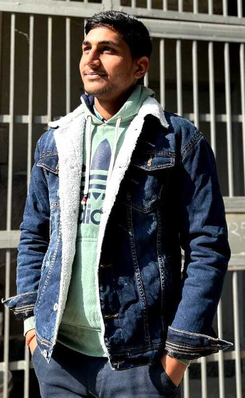

WELCOME

MANMOHAN YADAV
About Me
My self Manmohanyadav. I was born on 7th November 2005 in Firozabad district of Uttar Pradesh .Now a days, I am learning a diploma of Web Designing & Development.
I am currently learning HTML language. I gave 10th exam in 2021. I passed 10th fromGirdhari Inter College, Firozabad district, Uttar Pradesh.
I gave 12th exam in 2023.I passed 12th from Girdhari Inter College , Firozabad district, Uttar Pradesh. I am learning Bachelor of Arts degree from foolan Singh University , Firozabad district, Uttar Pradesh.